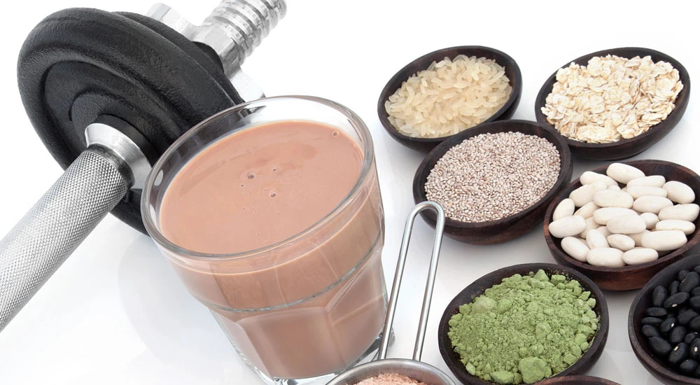

Vor oder nach dem Sport essen: Tipps für dein Workout

In unserem Blogartikel „Vor oder nach dem Sport essen: Tipps für dein Workout“ erfährst du, wie entscheidend die richtige Ernährung für deinen sportlichen Erfolg ist. Wir beleuchten die Vor- und Nachteile des Essens vor und nach dem Sport und geben dir wertvolle Tipps zur optimalen Energiezufuhr, zur Förderung des Muskelaufbaus und zur Verbesserung deiner Regeneration durch die richtige Nahrung.
Entdecke die besten Lebensmittel für deine Mahlzeiten und lerne, wie wichtig das Timing deiner Nahrungsaufnahme ist, um deine Fitnessziele schneller zu erreichen.
Vorab: Um das Beste aus deiner Ernährung herauszuholen, ist es wichtig, individuelle Bedürfnisse und Vorlieben zu berücksichtigen. Jeder Körper reagiert unterschiedlich auf verschiedene Nahrungsmittel und Zeitpunkte der Zufuhr.
Daher lohnt es sich, ein wenig zu experimentieren, um herauszufinden, welche Kombinationen für dich persönlich am effektivsten sind. Es könnte hilfreich sein, ein Ernährungstagebuch zu führen, um zu beobachten, wie sich deine Leistungsfähigkeit und Muskelaufbau in Abhängigkeit von deinen Mahlzeiten gestalten.
Achte darauf, ausreichend Flüssigkeit zu dir zu nehmen, denn auch das spielt eine entscheidende Rolle für deine sportliche Leistung. Stelle sicher, dass du vor und nach dem Training die richtigen Flüssigkeitsmengen aufnimmst, um optimale Ergebnisse zu erzielen!
Vor- und Nachteile des Essens vor dem Sport
Essen vor dem Sport kann dir helfen, die notwendige Energie für dein Workout zu tanken. Eine ausgewogene Ernährung, die reich an Kohlenhydraten und Proteinen ist, kann deinen Körper mit der Energie versorgen, die er für intensive Trainingseinheiten benötigt.
Besonders geeignet sind Lebensmittel wie Bananen oder Haferflocken, die schnell verdauliche Kohlenhydrate und wichtige Nährstoffe liefern. Diese Nahrungsmittel helfen dir, deine Leistung zu steigern und das Beste aus deinem Training herauszuholen. Zudem sorgt eine gezielte Energiezufuhr dafür, dass du dich während des Workouts fitter und leistungsfähiger fühlst.
Energiezufuhr für dein Workout
Die richtige Nahrungsaufnahme vor dem Sport ist entscheidend für deine Leistungsfähigkeit. Wenn du deinem Körper die nötigen Nährstoffe zur Verfügung stellst, kannst du nicht nur deine Ausdauer verbessern, sondern auch deine Muskulatur optimal unterstützen.
Kohlenhydrate sind hierbei besonders wichtig, da sie als Hauptenergiequelle dienen. Sie werden schnell in Glukose umgewandelt, die die Muskeln während des Trainings benötigen. Neben Kohlenhydraten sollten auch Proteine in deiner Ernährung nicht fehlen, da sie für den Muskelaufbau und die anschließende Regeneration unerlässlich sind. Achte darauf, dass deine Mahlzeit vor dem Sport leicht verdaulich ist, um Magenbeschwerden während des Trainings zu vermeiden.
Mögliche Verdauungsprobleme
Ein Nachteil des Essens vor dem Sport kann in möglichen Verdauungsproblemen liegen. Wenn du zu kurz vor deinem Training isst oder schwer verdauliche Lebensmittel wählst, kann dir die Nahrung schwer im Magen liegen, dich träge und müde machen, und es kann Unwohlsein oder sogar Übelkeit kommen.
Dies kann deine Leistung erheblich beeinträchtigen und das Training weniger effektiv machen.
Um Verdauungsprobleme zu vermeiden, empfiehlt es sich, mindestens 30 bis 60 Minuten nach der letzten Mahlzeit zu warten, bevor du mit dem Workout beginnst. Leichte Snacks wie Früchte oder ein kleiner Smoothie sind oft eine gute Wahl, da sie schnell verstoffwechselt werden und dir trotzdem die benötigte Energie liefern. Vermeide übergroße Portionen und schwere Mahlzeiten.
Es gibt kein einheitliches Rezept für die optimale Zeit, da jeder Körper unterschiedlich reagiert.
Generell gilt: Plane deine Mahlzeiten so, dass zwischen Essen und Training genügend Zeit bleibt. Idealerweise solltest du 2 bis 3 Stunden vor dem Sport eine vollwertige Mahlzeit einnehmen. Für einen kleinen Snack kannst du 30 bis 60 Minuten vorher etwas essen. Diese zeitliche Planung hilft deinem Körper, die Nahrung richtig zu verdauen und gibt dir die nötige Energie für dein Workout.
Das Essen nach dem Sport und die Vorteile
Essen nach dem Sport spielt eine zentrale Rolle für deine körperliche Erholung und den Muskelaufbau. Es bietet zahlreiche Vorteile für deine Regeneration.
Während des Trainings werden die Muskeln beansprucht und benötigen danach gezielte Nährstoffe, um sich zu erholen und optimal aufzubauen.
In der Zeit direkt nach dem Training benötigt dein Körper daher verstärkt Nährstoffe, um die während des Workouts verbrauchten Energiereserven wieder aufzufüllen und den Reparaturprozess der Muskulatur zu unterstützen.
Ideal sind proteinreiche Lebensmittel, die helfen, Mikrorisse in den Muskeln zu heilen und das Wachstum neuer Muskelmasse zu fördern. Kombiniert mit Kohlenhydraten kann dein Körper schnell die notwendigen Energiequellen wiederherstellen.
Hier eignen sich besonders hochwertige Produkte wie mageres Fleisch, Quark oder ein eiweißreicher Shake in Verbindung mit einer Banane oder Vollkornbrot als perfekter „Nach dem Workout Snack". Mögliche Ideen sind auch ein Smoothie mit Banane und Whey Proteinpulver* oder ein Vollkornbrot mit Hüttenkäse.
Eine gut geplante Mahlzeit danach trägt nicht nur zur schnelleren Regeneration bei, sondern optimiert auch die Anpassung deines Körpers an das Training, wodurch du langfristig an Kraft und Ausdauer gewinnst.
Die Zeitspanne zwischen dem Workout und der Nahrungsaufnahme ist wichtig. Idealerweise solltest du innerhalb von 30 bis 60 Minuten nach dem Sport eine Mahlzeit einnehmen. Dies ist der Zeitraum, in dem dein Körper am besten in der Lage ist, Nährstoffe aufzunehmen und zu verarbeiten.
Wenn du diesen Zeitpunkt verpasst, könnte es schwieriger werden, die gewünschten Ergebnisse zu erzielen
Förderung der Regeneration
Nach dem Training ist der Körper auf eine gezielte Nahrungsaufnahme angewiesen, um sich von den Anstrengungen zu erholen. Während des Trainings werden Muskelzellen beansprucht und kleine Risse entstehen. Um diese Risse zu reparieren und das Muskelgewebe zu stärken, benötigt dein Körper ausreichend Eiweiß.
Lebensmittel wie Hähnchenbrust, Quark oder pflanzliche Proteinquellen wie Linsen sind ideal, um deinen Proteinbedarf zu decken. Die Kombination aus Kohlenhydraten und Proteinen ist entscheidend, da Kohlenhydrate helfen, die Glykogenspeicher in den Muskeln wieder aufzufüllen. Dies ist besonders wichtig, wenn du regelmäßig trainierst oder an Wettkämpfen teilnimmst.
Unterstützung des Muskelaufbaus
Der Muskelaufbau erfolgt nicht während des Trainings, sondern in der Regenerationsphase danach. Um diesen Prozess zu optimieren, solltest du darauf achten, nach dem Sport eine Mahlzeit einzunehmen, die reich an Eiweiß und gesunden Fetten ist.
Avocados, Nüsse oder Samen sind hervorragende Quellen für gesunde Fette, die ebenfalls zur Regeneration beitragen können.
Lies hier mehr darüber, ob pflanzliche oder tierische Proteinquellen für den Muskelaufbau bessern sind.
Verbesserung der Energielevels
Eine ausgewogene Mahlzeit nach dem Sport kann auch dazu beitragen, deine Energielevels schnell wiederherzustellen. Nach einem intensiven Workout kann es vorkommen, dass du dich erschöpft fühlst und auch mehr Hunger als gewöhnlich hast.
Durch die richtige Nahrungsaufnahme kannst du deinem Körper helfen, sich schneller zu regenerieren und wieder in Schwung zu kommen. Achte wie bereits gesagt darauf, dass deine Mahlzeit sowohl Kohlenhydrate als auch Proteine enthält.
Vergiss nicht, ausreichend Wasser zu trinken
Neben der Nahrungsaufnahme spielt auch die Flüssigkeitszufuhr eine entscheidende Rolle bei der Regeneration. Wasser ist essentiell für die Aufrechterhaltung deiner körperlichen Leistungsfähigkeit und hilft dabei, die Nährstoffe zu transportieren, die dein Körper benötigt.
Während des Sports verliert dein Körper durch Schwitzen viel Flüssigkeit, die unbedingt ersetzt werden muss. Wasser ist hierbei die beste Wahl, aber auch elektrolythaltige Getränke wie ein isotonischer Fitness-Drink können sinnvoll sein, insbesondere bei längeren Trainingseinheiten oder Wettkämpfen. Experimentiere mit verschiedenen Getränken, um herauszufinden, was für dich am besten funktioniert.
Achte darauf, sowohl vor, während und nach dem Sport genügend Flüssigkeit zu dir zu nehmen. Insbesondere bei intensiven Trainingseinheiten oder warmen Temperaturen verlierst du besonders viele, wertvolle Mineralstoffe und Elektrolyte. In solchen Fällen können elektrolythaltige Getränke auch schon vor und während des Trainings helfen, deine Flüssigkeitsbilanz wiederherzustellen, die Leistung zu erhalten und Muskelkrämpfe zu reduzieren oder zu verhindern.
Die besten Lebensmittel für vor und nach dem Sport
Ein durchdachter Plan kann dir helfen, die richtigen Nährstoffe zum richtigen Zeitpunkt aufzunehmen und damit deine Leistung hochzuhalten bzw. zu fördern.
Beginne in deiner Planung mit einer Vielzahl an Proteinquellen, um deinem Körper die nötigen Aminosäuren zur Verfügung zu stellen. Fisch, mageres Geflügel, pflanzliche Proteine aus Hülsenfrüchten und Nüssen tragen allesamt dazu bei, den Muskelerhalt und -aufbau zu unterstützen.
Dies sollte durch komplexe Kohlenhydrate ergänzt werden, wie sie in Vollkornprodukten, Quinoa oder Süßkartoffeln vorkommen. Diese liefern nicht nur die benötigte Energie für dein Training, sondern fördern auch eine langanhaltende Sättigung.
Die Auswahl der richtigen Lebensmittel kann entscheidend für deinen Trainingserfolg sein. Wenn du weißt, welche Nahrungsmittel dir die nötige Energie geben und welche dir bei der Regeneration helfen, kannst du deine sportliche Leistung erheblich steigern.
Um das Beste aus deiner Ernährung herauszuholen, solltest du darauf achten, immer sowohl vor als auch nach dem Sport eine ausgewogene Kombination aus Kohlenhydraten und Proteinen zu konsumieren. Dies sorgt dafür, dass dein Körper sowohl während des Trainings optimal versorgt ist als auch nach dem Workout schnell regenerieren kann.
Iss auch am besten nicht immer das Gleiche, sondern gestalte deine Ernährung abwechslungsreich und probiere verschiedene Quellen von Proteinen und Kohlenhydraten.
Vermeide minderwertige Nahrung
Es ist wichtig, auf die Qualität der Lebensmittel zu achten, die du konsumierst.
Hochwertige, unverarbeitete Nahrungsmittel tragen entscheidend zu deinem Wohlbefinden und deiner Leistungsfähigkeit bei. Achte darauf, dass deine Ernährung reich an Vitaminen, Mineralstoffen und Antioxidantien ist. Frisches Gemüse, Obst, Nüsse und Samen sollten einen festen Platz auf deinem Speiseplan haben, da sie essentielle Nährstoffe liefern, die dein Körper zur optimalen Funktion benötigt.
Durch eine abwechslungsreiche Ernährung stellst du sicher, dass du alle notwendigen Mikronährstoffe erhältst, die deine Fitnessziele fördern.
Achte darauf, dass du keine nährstoffarme Nahrung isst, die zwar vielleicht viele Kalorien aber keine Mikronährstoffe liefert. Mikronährstoffe (Vitamine, Mineralien) sind lebensnotwendig für den Körper und extrem wichtig für alle Stoffwechselprozesse und damit auch deine Leistungsfähigkeit im Sport und für die Regeneration.
Leider ist dies vielen Menschen immer noch nicht bewusst. Statt einer hochwertigen Mahlzeit werden dann oft weiße Nudeln aus Auszugsmehl in großen Mengen gegessen, in dem Glauben, dass dadurch die sportliche Leistung und das Muskelwachstum gut unterstützt wird.
Auch wenn dies im ersten Moment funktioniert und du dich fit fühlst, wird es über die Zeit auf die Nährstoffbilanz deines Körpers schlagen, und dich dadurch langfristig schwächen und deinem Körper schaden. Irgendwann schlägt die Leistungsfähigkeit um und du wirst dich fragen, was mit dir los ist.
Schließlich würdest du auch nicht in deinen Sportwagen Heizöl tanken, welches den Motor ruiniert, oder?
Was ist minderwertige Nahrung? Alle Produkte aus Auszugsmehlen wie helles Brot und Nudeln, Gebäck, gewöhnliche Süßigkeiten, Fastfood jeder Art und stark verarbeitet Nahrungsmittel.
Nicht umsonst nutzen professionelle Sportler Nahrungsergänzung. Je mehr wir den Körper belasten, umso wichtiger ist eine hochwertige Nahrung, denn der Nährstoffbedarf an Mikronährstoffen, guten Fetten, Antioxidantien und Aminosäuren nimmt stark zu.
Wenn du an einer grundlegenden Nährstoffergänzung interessiert bist, sieh dir gern einmal unser Optimal-Set an, welches wir dir als unabhängige Partner der FitLine Produkte anbieten. Es umfasst das Morgengetränk PowerCocktail, alternativ den für Sportler meist noch interessanteren Acti Energydrink** zusammen mit dem Basics, sowie das Abendgetränk Resto mit einer umfassenden Mischung zahlreicher Mineralien. Es wird von Sportlern besonders gern auch direkt nach dem Training getrunken.
Also: Es ist wirklich sehr wichtig, dass du nur hochwertige Lebensmittel auswählst. Wenn du viel Sport treibst, noch mehr als gewöhnlich!
Im folgenden Abschnitt stellen wir dir die besten Lebensmittel vor, die sich sowohl für die Einnahme vor als auch nach dem Sport eignen.
Lebensmittel für vor dem Sport
Es ist, wie bereits erwähnt, wichtig, dass du vor dem Sport Lebensmittel wählst, die schnell verdaulich sind und deinem Körper die benötigten Nährstoffe liefern. Zu den idealen Optionen gehören:
- Bananen: Sie sind reich an Kohlenhydraten und enthalten Kalium, das Muskelkrämpfen vorbeugt. Eine Banane ist auch ein perfekter Snack, den du leicht mitnehmen kannst.
- Haferflocken: Diese sind eine hervorragende Quelle für komplexe Kohlenhydrate, die dir über einen längeren Zeitraum Kalorien liefern. Kombiniere sie z. B. mit etwas Joghurt oder frischem Obst, um den Nährstoffgehalt zu erhöhen. Nutze bitte keine trockenen Haferflocken, sondern weiche sie vorher entsprechend ein oder koche sie am besten sogar kurz auf.
- Vollkornbrot mit Aufstrich: Ein Stück Vollkornbrot mit Hüttenkäse oder Erdnussbutter ist eine gute Wahl. Es liefert dir sowohl Kohlenhydrate als auch Proteine, die dein Workout unterstützen.
- Smoothies und Shakes: Ein schneller und einfacher Weg, um viele Nährstoffe zu konsumieren. Mixe eine Banane, etwas Eiweißpulver deiner Wahl sowie Joghurt oder Nussmus für einen nährstoffreichen Drink.
Lebensmittel für nach dem Sport
Eine gezielte Nahrungsaufnahme kann den Muskelaufbau unterstützen und die Erholung beschleunigen. Hier sind einige der besten Lebensmittel für nach dem Workout:
- Hähnchenbrust: Eine hervorragende Proteinquelle, die deinem Körper hilft, Muskelgewebe zu reparieren und aufzubauen. Kombiniere sie mit einer Portion Gemüse und einer Quelle gesunder Kohlenhydrate wie Quinoa, Vollkornnudeln oder Süßkartoffeln.
- Quark oder Hüttenkäse: Diese Produkte sind reich an Eiweiß und eignen sich perfekt als Snack nach dem Training. Du kannst sie mit frischen Früchten oder Nüssen verfeinern.
- Linsen und Bohnen: Pflanzliche Proteinquellen wie Linsen sind nicht nur nahrhaft, sondern auch reich an Ballaststoffen, die zur Sättigung beitragen. Sie können in Salaten oder als Beilage verwendet werden.
- Nüsse und Samen: Diese liefern gesunde Fette sowie Eiweiß und sind ideal für einen schnellen Snack nach dem Sport. Eine Handvoll Mandeln oder Erdnüsse kann Wunder wirken. Für gute Fette eignet sich auch Avocado oder ein gutes Omega-3-Öl.
Ich persönlich nehme nach dem Sport auch gern zusätzlich essentielle Aminosäuren* als Nahrungsergänzung ein, um dem Körper sofort verfügbare Baustoffe zu liefern. Im Zusammenhang mit Sport schätze ich solche Produkte sehr.
Timing der Nahrungsaufnahme: wann vor oder nach dem Sport essen?
Das richtige Timing der Nahrungsaufnahme kann deine sportliche Leistung erheblich beeinflussen. Die Frage, ob du vor oder nach dem Sport essen solltest, hängt nicht nur von deinen persönlichen Vorlieben ab, sondern auch von den Zielen, die du mit deinem Training verfolgst.
Ein strategisches Vorgehen bei der Nahrungsaufnahme kann dir also helfen, deine Fitnesslevels zu optimieren und die Regeneration zu fördern. In diesem Abschnitt werden wir die Bedeutung des Timings nochmal genauer beleuchten und dir Tipps geben, wie du deine Mahlzeiten am besten auf dein Training abstimmen kannst.
Die Zeitspanne zwischen deinem Essen und dem Training ist wirklich entscheidend für deine Leistung. Wenn du zu nah am Workout isst, kann dein Körper Schwierigkeiten haben, die Nahrung zu verdauen, was sich negativ auf deine Leistung auswirken kann. Auf der anderen Seite kann das Auslassen einer Mahlzeit vor dem Training dazu führen, dass dir die Power fehlt, um dein volles Potenzial auszuschöpfen, und deinen Körper dadurch schwächen. Darum ist es wichtig, ein ausgewogenes Verhältnis zu finden und das Timing deiner Mahlzeiten entsprechend anzupassen.
Vor dem Training essen
Wenn du planst, vor dem Sport zu essen, solltest du dies mindestens 2 bis 3 Stunden vor dem Training tun. In dieser Zeit hat dein Körper genügend Gelegenheit, die Nährstoffe aufzunehmen und in Energie umzuwandeln. Eine vollwertige Mahlzeit sollte eine ausgewogene Mischung aus Kohlenhydraten, Proteinen und gesunden Fetten enthalten. Kohlenhydrate sind besonders wichtig, da sie als Hauptenergiequelle dienen und dir helfen, während des Trainings leistungsfähig zu bleiben. Du könntest beispielsweise eine Kombination aus Vollkornnudeln mit Hähnchen und Gemüse wählen.
Falls du weniger Zeit hast oder kurz vor dem Training einen Snack benötigst, sind leicht verdauliche Optionen wie ein Stück Obst mit Joghurt oder ein leichter Shake ideal. Diese Snacks liefern schnell verfügbare Kalorien und belasten deinen Magen nicht. Achte darauf, dass du bei der Auswahl deiner Snacks die richtige Balance findest: sie sollten dir ausreichend Power geben, ohne dich schwer fühlen zu lassen.
Nach dem Training essen
Idealerweise solltest du innerhalb von 30 bis 60 Minuten nach deinem Workout eine Mahlzeit einnehmen. Die Zeit unmittelbar nach dem Sport wird oft als das sogenannte „anabole Fenster“ bezeichnet, in dem der Körper besonders empfänglich für Nährstoffe ist, die zur Regeneration und zum Muskelaufbau beitragen.
Hier ist es entscheidend, dass du schnell eine ausgewogene Mahlzeit zu dir nimmst, die sowohl Kohlenhydrate als auch Eiweiß enthält. Kohlenhydrate helfen, die Glykogenspeicher in deinen Muskeln wieder aufzufüllen, während Eiweiße essentielle Aminosäuren bereitstellen, die für den Muskelaufbau und die Reparatur der Muskeln notwendig sind. Darüber hinaus solltest du auch den Anteil an gesunden Fetten nicht vernachlässigen. Fette ermöglichen eine bessere Aufnahme von fettlöslichen Vitaminen und sind sehr wichtig für viele Prozesse in deinem Körper.
Du könntest zum Beispiel einen Smoothie mit Proteinpulver und einer Banane zubereiten oder ein Gericht mit Quark und frischem Obst genießen, und dazu etwas Omega-3 reiches Öl oder etwas Avocado ergänzen.
Individuelle Anpassungen: persönliche Bedürfnisse berücksichtigen
Ein wichtiger Punkt ist die individuelle Anpassung deiner Ernährung an deinen Trainingsstil und deine Ziele. Die Entscheidung, ob du vor oder nach dem Sport essen solltest, hängt nicht nur von allgemeinen Empfehlungen ab, sondern auch von persönlichen Faktoren wie deiner Trainingsintensität, deinem Stoffwechsel und deinen spezifischen Zielen. Es ist entscheidend, dass du auf die Signale deines Körpers hörst und deine Ernährung entsprechend anpasst, um optimale Ergebnisse zu erzielen.
Wenn du beispielsweise intensives Krafttraining machst, benötigst du vermutlich einen höheren Proteinanteil im Vergleich zu einem Ausdauertraining.
Überlege dir, wie dein persönlicher Energiebedarf aussieht und passe deine Mahlzeiten entsprechend an.
Geduld ist von Bedeutung; Veränderungen im Körper benötigen Zeit. Verfolge deine Fortschritte und passe deine Ernährungsstrategien gegebenenfalls an.
Es ist wichtig zu betonen, dass jeder Körper unterschiedlich reagiert. Die Art und Weise, wie dein Körper auf verschiedene Nahrungsmittel reagiert, kann stark variieren.
Faktoren wie dein Stoffwechsel, die Intensität deines Trainings und deine persönlichen Vorlieben sollten in deine Entscheidungen einfließen. Einige Sportler fühlen sich nach einer leichten Mahlzeit vor dem Training energiegeladen, während andere möglicherweise besser ohne vorherige Nahrungsaufnahme zurechtkommen. Achte darauf, wie du dich fühlst, wenn du vor dem Sport isst. Wenn du bemerkst, dass dir nach einer bestimmten Mahlzeit schwer im Magen ist oder du dich träge fühlst, könnte es sinnvoll sein, deine Essgewohnheiten zu überdenken.
Es ist wichtig zu bedenken, dass dein Stoffwechsel eine Rolle spielt. Menschen mit einem schnelleren Stoffwechsel benötigen möglicherweise häufiger Snacks oder kleinere Mahlzeiten über den Tag verteilt, um ihre Energielevels stabil zu halten. Hierbei kann es hilfreich sein, einen Ernährungsplan zu erstellen, der auf deinen individuellen Bedürfnissen basiert und dir hilft, deine Ziele zu erreichen.
Experimentiere mit verschiedenen Zeitpunkten und Arten von Nahrungsaufnahme, um herauszufinden, was für dich am besten funktioniert. Achte darauf, wie dein Körper auf verschiedene Mahlzeiten reagiert und passe deine Routine entsprechend an.
Mache regelmäßig eine Bestandsaufnahme deiner Ernährung und nimm gegebenenfalls Anpassungen vor. Indem du kontinuierlich analysierst, welche Lebensmittel dir guttun und welche nicht, kannst du deine Ernährungsstrategie weiter verfeinern und optimal an deine sportlichen Ambitionen anpassen.
Trainingsziele und Intensität
Ein wichtiger Aspekt sind deine Trainingsziele: Wenn du beispielsweise Muskeln aufbauen möchtest, ist es wichtig, sowohl vor als auch nach dem Sport auf eine ausreichende Eiweißzufuhr zu achten.
Auf der anderen Seite, wenn dein Ziel darin besteht, Gewicht zu verlieren, kann es sinnvoll sein, vor dem Training eine kleinere Mahlzeit zu dir zu nehmen oder diese ganz auszulassen. Hierbei ist es wichtig, dass du darauf achtest, dennoch genügend Energie für dein Workout zu haben.
Die Intensität deines Trainings spielt ebenfalls eine Rolle:
Bei hochintensiven Einheiten benötigst du sicher mehr Kalorien in Form von Kohlenhydraten vor dem Training. Diese können dir helfen, deine Leistung zu steigern und die nötige Ausdauer für dein Workout bereitzustellen. In solchen Fällen kann ein Snack wie eine Banane oder ein Energieriegel eine gute Wahl sein. Bei weniger intensiven Trainingseinheiten hingegen könntest du feststellen, dass eine leichtere Kost ausreichend ist.
Fazit: wie isst du am besten?
Abschließend lässt sich festhalten, dass die Entscheidung, ob und was du konkret vor oder nach dem Sport essen solltest, eine individuelle Angelegenheit ist, die von verschiedenen Faktoren abhängt. Während das Essen vor dem Workout dir helfen kann, die notwendige Power für intensive Trainingseinheiten zu tanken und deine Leistungsfähigkeit zu steigern, bringt das Essen nach dem Sport zahlreiche Vorteile für die Regeneration und den Muskelaufbau mit sich. Die Wahl der richtigen Lebensmittel spielt dabei natürlich eine entscheidende Rolle, und die Regeln für das Timing solltest du in jedem Fall beachten. Plane deine Mahlzeiten so, dass sie optimal auf dein persönliches Training abgestimmt sind. Berücksichtige deine individuellen Bedürfnisse und Ziele, um herauszufinden, was für dich am besten funktioniert. Achte darauf, wie dein Körper auf verschiedene Nahrungsmittel reagiert und passe deine Ernährung entsprechend an.
Indem du diese Erkenntnisse in deine Routine integrierst, kannst du nicht nur deine sportliche Leistung verbessern, sondern auch deine Fitnessziele schneller erreichen und dich insgesamt fitter fühlen.
Häufige Fragen auf einen Blick
Was isst man am besten vor und nach dem Sport?
Vor dem Sport sind leicht verdauliche Kohlenhydrate ideal, um dir Energie zu geben. Gute Optionen sind Bananen, Haferflocken oder ein Joghurt mit Obst. Nach dem Sport solltest du eine Kombination aus Proteinen und Kohlenhydraten zu dir nehmen, um die Muskelregeneration zu unterstützen. Hier bieten sich beispielsweise ein Proteinshake mit einer Banane oder ein Hähnchen-Sandwich mit Vollkornbrot an.
Ist es besser, vor oder nach dem Sport zu essen?
Das hängt von deinem persönlichen Wohlbefinden ab. Viele Sportler bevorzugen es, vor dem Training zu essen, um genügend Energie zu haben. Wenn du jedoch Schwierigkeiten hast, während des Trainings mit vollem Magen zu trainieren, kann es besser sein, nach dem Sport zu essen. Achte darauf, wie dein Körper reagiert und finde die beste Lösung für dich.
Was sollte ich 1 Stunde vor dem Training essen?
Eine Stunde vor dem Training solltest du eine kleine Mahlzeit oder einen Snack wählen, der reich an Kohlenhydraten und moderat in Proteinen ist. Zum Beispiel kannst du einen Energieriegel, einen Smoothie mit Banane und Haferflocken oder einen Vollkorntoast mit Erdnussbutter genießen. Vermeide schwere und fettige Speisen, da sie schwer im Magen liegen können.
*Proteine (Aminosäuren) tragen zur Erhaltung und Zunahme von Muskelmasse bei. **Thiamin, Riboflavin, Biotin, Niacin und Pantothensäure tragen zu einem normalen Energiestoffwechsel bei.